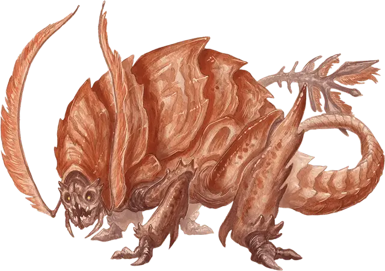

Ржавник
Rust Monster
Средний Монстр, без мировоззрения

Класс Доспеха 14 (природный доспех)
Хиты 27 (5к8 + 5)
Скорость 40 футов
| мод | спас | ||
|---|---|---|---|
| СИЛ | 13 | +1 | +1 |
| ЛОВ | 12 | +1 | +1 |
| ТЕЛ | 13 | +1 | +1 |
| мод | спас | ||
|---|---|---|---|
| ИНТ | 2 | −4 | −4 |
| МДР | 13 | +1 | +1 |
| ХАР | 6 | −2 | −2 |
Чувства тёмное зрение 60 футов, пассивное Восприятие 11
Опасность 1/2 (100 опыта)
Бонус мастерства +2
Среда обитания Подземье
Особенности
Нюх на металл. Ржавник может определить по запаху местонахождение содержащего железо металла в пределах 30 футов.
Коррозия металла. Любое немагическое оружие, изготовленное из металла, попадающее по ржавнику, начинает разъедаться. После причинения урона оружие получает постоянный накопительный штраф −1 к броскам урона. Если этот штраф дойдет до −5, оружие будет уничтожено. Немагические боеприпасы, изготовленные из металла, попадающие по ржавнику, уничтожаются после причинения урона.
Действия
Укус. Рукопашная атака оружием: +3 к попаданию, досягаемость 5 футов, одна цель. Попадание: Колющий урон 5 (1к8 + 1).
Антенны. Ржавник разъедает немагический железосодержащий металлический предмет, видимый в пределах 5 футов. Если предмет никто не несет и не носит, это касание уничтожает 1 кубический фут его. Если этот предмет несет или носит другое существо, оно может совершить спасбросок Ловкости Сл 11, чтобы избежать прикосновения ржавника.
Если предмет — носимый или несомый металлический доспех или щит, он получает постоянный накопительный штраф −1 к КД, который он предлагает. Доспех уничтожается, если штраф уменьшает его КД до 10. Щит уничтожается, если штраф уменьшает его бонус до +0. Если предмет — металлическое оружие, оно ржавеет, как описано в особенности Коррозия металла.
Описание
«ОН УНИЧТОЖИЛ МОЙ МОЛОТ И МОЮ СЕКИРУ. ОН ПРОВЕРИЛ МОЮ ВЕРУ СЕГОДНЯ».
— БРОУН ГРОМОКАМЕНЬ, ДВАРФ ПАЛАДИН ДУМАТОЙНА
Многие дварфы предпочтут встретить отряд орков, чем противостоять одному ржавнику. Это странное, обычно кроткое существо, подвергает коррозии содержащие железо металлы, а затем пожирает образовавшуюся ржавчину. Так оно разрушило доспехи, щиты и оружие бесчисленного количества искателей приключений.
Тело ржавника покрыто толстым слоем бугристых пластин, длинный хвост заканчивается костяным выступом, а из насекомообразной головы растут два мохнатых уса.
Подземные мусорщики. Ржавники бродят по подземным проходам в поисках железосодержащих металлов, таких как железо, сталь, адамантин и мифрил. Они безразличны к существам, не имеющим металлы, но проявляют агрессию к владельцам стальных доспехов и оружия. Ржавник чует свою пищу на расстоянии, сразу же устремляясь к источнику запаха, чтобы покрыть его ржавчиной и поглотить.
Ржавнику нет разницы, с чего пожирать ржавчину, с гвоздя или меча. Искатели приключений могут отвлечь его, бросая вещи из содержащих железо металлов позади себя.
Подземные скитальцы. Ржавники редко встречаются в больших количествах, предпочитая охотиться поодиночке или малыми группами. Они плутают вдоль туннелей, от пещеры к пещере, безустанно ища чёрные металлы себе в пищу. Их скитания часто приводят их к другим обитателям Подземья, которые находят их безвредными или не аппетитными. Таким образом, их можно обнаружить рядом с другими подземными чудовищами. Если за ними хорошо ухаживать и кормить, они также могут стать дружественными спутниками или питомцами.